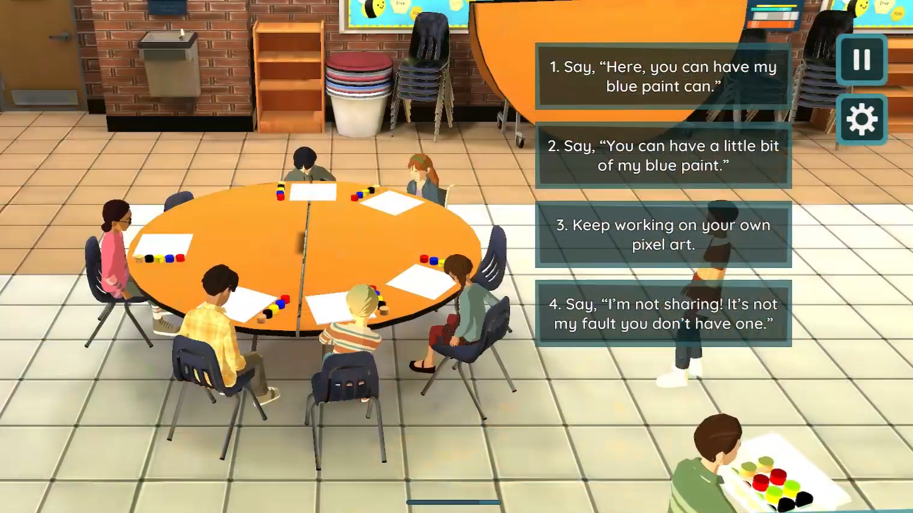
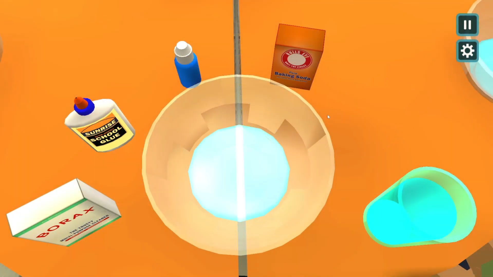

Interactive Science Learning
vSchool
Interactive behavioral assessment designed to evaluate middle school students’ prosocial decision-making through narrative-driven gameplay.
Overview
vSchool is an interactive behavioral assessment in which middle school students navigate an after-school program and make decisions that test their prosocial skills. Along the way, they complete mini-games and interact with non-player characters across a diverse range of social situations. The project is designed to provide educators with insight into students' social and emotional competencies while also offering an engaging and relatable experience for young learners.
Demo Video
My Contributions
Narrative Writing
Collaborated with subject matter experts to develop narrative systems, branching dialogue, and interactive scenarios that embedded prosocial decision-making into gameplay and mini-game experiences.
Storyboarding & Game Design
Created storyboards, character profiles, and design documentation to guide art and development efforts.
Cross-Disciplinary Collaboration
Collaborated closely with artists, developers, educators, and writers throughout development.
Design Challenges
A major challenge was creating dialogue and social situations that felt authentic to middle school students while still functioning as meaningful behavioral assessment tools. The project required balancing realistic interactions, player engagement, and effective assessment design.


Reflection
This project challenged me to think about game design in the context of assessment rather than direct instruction, while still prioritizing player engagement and meaningful social interaction.
This project was developed collaboratively with interdisciplinary teams of educators, developers, artists, and researchers. Artist Carolyn Jarecki can be found at carolynjarecki.weebly.com. Artist Charles Sielert can be found on LinkedIn. Artist Angela Jarecki can be found on LinkedIn.